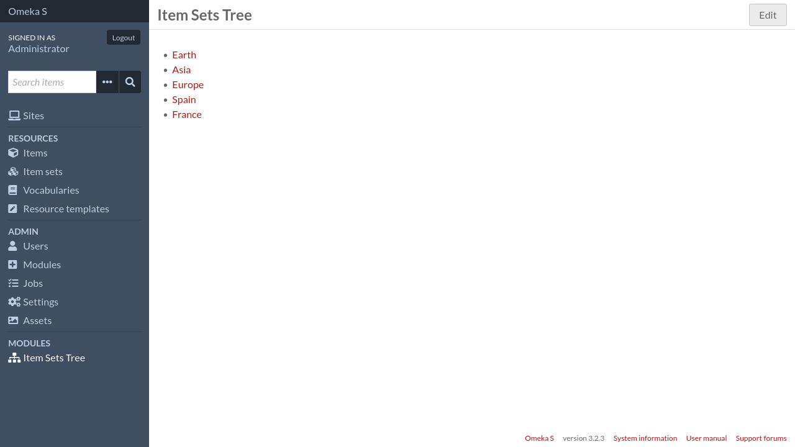
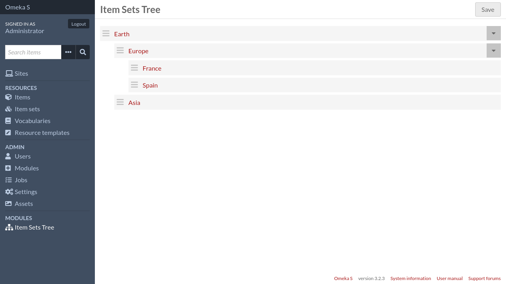

Define the item set hierarchy
To define the item set hierarchy, log in to the admin interface and click on
Item Sets Tree in the left sidebar, under the Modules section.
The item sets tree will be shown (it will be flat if it’s your first time using the module)
Click on the Edit button in the top right corner of the page. You are now
in “edit” mode.
You can drag and drop item sets to organize them in the way you want. For instance:
Once you are done, click on the Save button.